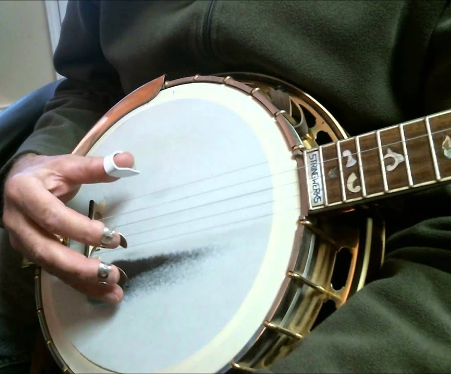
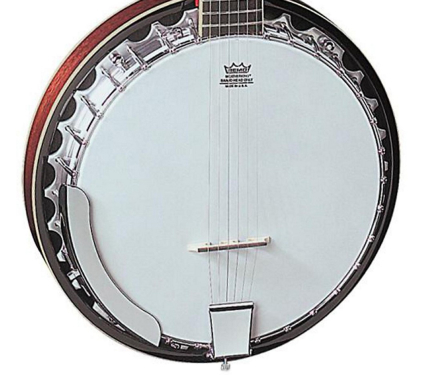

- 
-

- 
Many banjo players learn songs and rolls from tablature, but never really learn what notes they are playing on the banjo.
This first exercise is going to teach you the chords on a banjo all the way up the neck.

By learning all of the chord inversions, the fingerboard will open up to you and those notes up the fretboard won't be so intimidating
The name of the note which is the root is used to denote the chord - a G note would be the root of a G chord, an A would be the root of an A or Am chord, etc.).
This will cause us to play a G major scale on the 3rd string while harmonizing on the 1st and 2nd string.